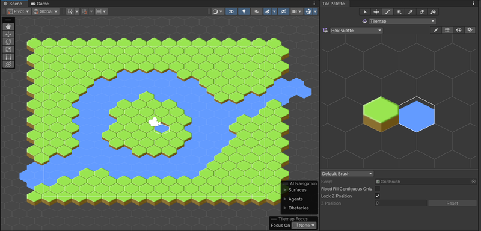
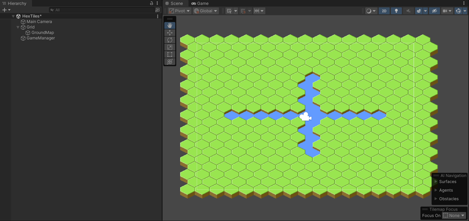
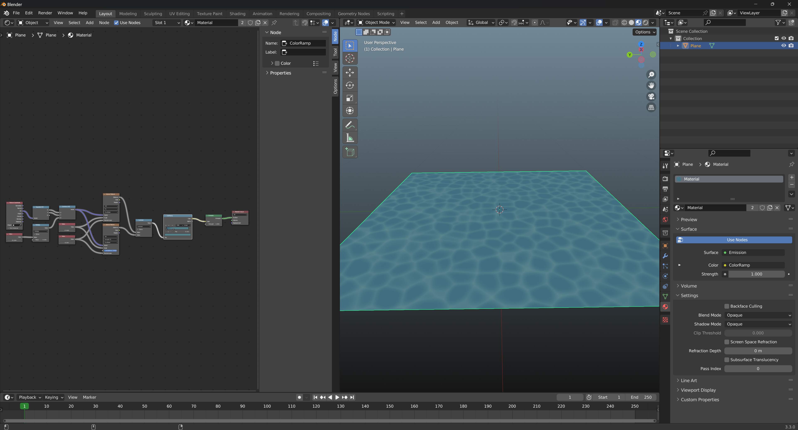
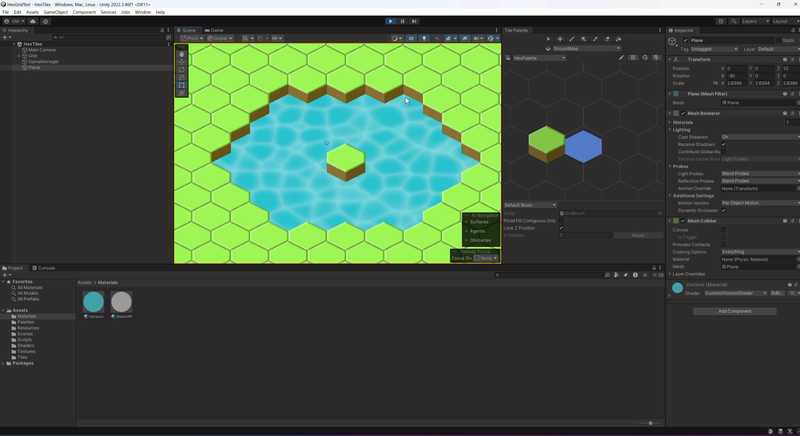
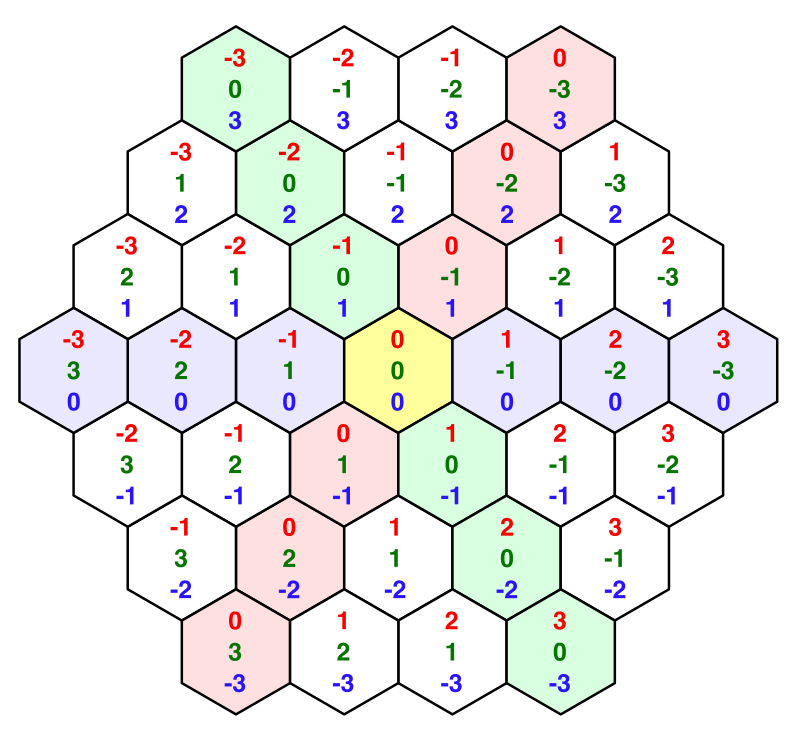
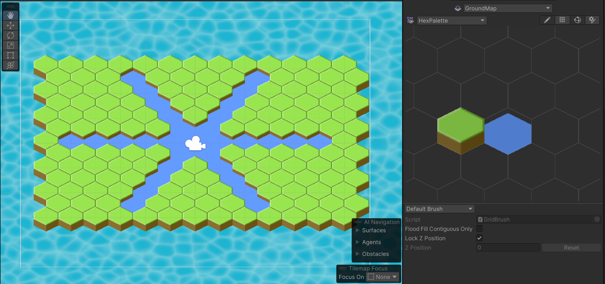

Blog Post #1
To kick off this week's meeting we began with some icebreakers. Shortly following, a brief demo was given to introduce the basics of using Notion. It was a new software to me, but it was pretty easy to pick up on. A similar demonstration was given to introduce Gitlab, at which point I cloned the existing directory for project Sandcastle.
The teams were the semester were announced. I was on R&D team #1 alongside Connor Spears and Nadav Havilio. I was happy being on R&D, as I'm not too partial to the strategy genre of project Sandcastle. We began the second part of the meeting within our own groups. Us R&D teams were assigned to decide on a game genre and spend the week doing research to disocver what makes a game within that genre succesful.
Our R&D group met on a discord call to establish the genre for the game we would be developing. The main ideas we discussed were platformer, fighting game, and management simulator. We decided against platformer, as Wolverinesoft Studio had very recently created a platformer game. During the previous weekly meeting Connor and I had tossed around the idea of a managment simulator, which is where we as a group settled. We are leaning in the direction of a fantasy/magic based game as it opens up many potential features and ideas going forward. It also fits very well with Nedav's perferred art direction.
Once we were decided on our genre, we moved on to establishing our tasks for the rest of the week. We would need to research management simulator games. I suggested a particular emphasis on what makes succesful games of this genre feel entertaining rather than monotonous. We decided that we would meet again later in the week to consolodate our research and establish more concrete ideas for the game's direction to bring to the next weekly meeting.
knowing that our game was more than likely going to use some form of tile-based system, I wanted to make sure I was sufficienty experienced in using tilemaps. Tilemaps are not a feature of Unity that I've used in the past. Most of my past projects are 3D and never needed them. To make sure I at least knew the basics, I wanted to create a basic hexagon tilemap that used multiple tiles for a basic scene. To accomplish this I created two basic sprites, a ground sprite and a water sprite, then followed along with online tutorials.
The main issue I faced was that the two different sprites I had wouldn't order correctly according to the grid's ordering system. Either all ground sprites would overlap all water sprites or visa verse, independant of grid order. As it turns out, this was a result of the two sprites I used being from seperate textures. Once the two sprites were combined into a single texture then sliced into seperate sprites the ordering issues resolved themselves.
Completed Basic Scene using a Unity tilemap.
Once I knew how to create and use tilemaps in the editor, I wanted to ensure I knew how to modify them via scripts. I wanted to use scripts to create two lines of tiles along the x and y directions. This would help to teach me to use tilemaps in scripts and demonstrate how a tilemap's coordinate system works in a hex grid. I briefly skimmed the Unity documentation and found TileMap.SetTile() would be the best option to accomplish this. I immediatly ran into issues creating the script, as my IDE refused to recognise the TileMap object. After a brief search I found it was because I needed to manually include the UnityEngine.TileMap library. Once that was done it was as simple as creating a simple for loop.
The x coordinate was exactly as I would have expected, being straight across. The y coordinate was more interesting, zagging from side to side along the axis. If we do go along with the idea of a hex grid in our final project I will need to be sure to keep aware of this when adding new features.
Altered tilemap resulting from script
My research into what makes a good management simulator game included looking through user reviews and review articles for popular games of the genre. The games I looked into included Cities: Skylines, Cities: Skylines II, and Factorio. Cities: Skylines and Factorio both represented examples of renowned and succesful games, while Cities: Skylines II, which has a much more negative rating, could provide insight on what to avoid.
By the end of my research I had several major take aways. One is that the world should feel alive. The actions and decisions of the player should appear to affect the games environments and inhabitants and the behavior of the world should influence the players decisions. Games that accomplish this seem to succeed in being engaging, while ones that don't make the game's visuals feel like a facade.
My second main takeaway I'd like to mention is that the player is almost never given all their tools from the get-go. Starting out the player had a more limited number of options, and slowly gain new tools, technologies, or otherwise. This keeps the game interesting as the player progresses by preventing the gameplay from feeling monotonous or reptetive. It allows the player, once they're comfortable, to move onto new techniques and strategies to feel a continuous sense of learning and accomplishment. To add onto this, most games seem to make mistakes very easily reverable to encourage this learning process.
Even if we as a group haven't yet decided exactly what sortof game we're going to make, it's a safe bet that there will be water in the game. For that reason I wanted to get a head start in creating a water shader that could be used in our game. Aside from just looking like water, a proper water shader would need to be able to change over time. Before jumping right into HLSL code, I begin "drafting" the shader using Blender's shader editor. I ended up with a result very close to what I was imagining.
Draft of shader in Blender
Next I needed to adapt this shader over to Unity. This was easier said than done, though as the Blender shader required the use of a Voronoi texture. As far as I'm aware, Unity nor HLSL have any sort of built in voronoi texture. Instead, I attemped to use a simple version of the function I found online. The Blender shader uses both F1 and smooth F1 voronoi. Unfortunately, the smoothmin function I used for smooth F1 didn't accurately replicate Blender's Smooth F1 texture.
With some more research I was able to find a repository of the code used by Blender. Once I found the function used by the voronoi shader node I just had to adapt it from C++ to HLSL. There were some utility functions I had to find online aswell, such as smoothstep and mix. With the voronoi textures implimented all I had left to do was replicate the rest of the shader graph in HLSL, which was a fairly easy task.
Finished stylized water shader
Our group met up again on Discord. Out goal was both to discuss our major take aways from our genre research and establish major details of the game that we would need going forward. We all were settled on the idea of the player finding a dragon heart amonst a large dragon skeleton, then building up a magic-based town surrounding the heart. Some of the major details we discussed included what the main way the game would progress is, requirments of the building system, game mechanics and functions, types of buildings, major character concepts, and other necessary concepts like lore, dialogue system, and UI.
The goal of this meeting for the R&D groups was to finalize key idea, create a timeline, and allocate tasks for the next several weeks. Most of the ideation and key concepts for out game were established in our most previous R&D meeting, so we went straight to assigning tasks and creating a timeline. For our timeline we have 2 main goals. The first is to get a product that can be playtested with a month or so to get first impressions on our game and make any necessary changes. Second, we want to have a sufficeint prototype of our game in time for the showcase
For smaller tasks, we assigned several tasks for each memeber to complete in the next couple of weeks. I will be working on the building system with the goal of finishing by the end of the week. Connor would be working on UI and Nadav would be finalizing the style and references for the art direction of the game.
As was mentioned previously within the "Tilemap Script Editing" task, the default coordinate system for hex tilemaps, often called offset coordiantes, are somewhat irregualar and would be difficult to use going forward. Instead of using this system, I wanted to create a conversion between this and a much more convienient coordinate system called cubic coordinates. This coordinate system introdcues a new Z coordinate, which may seem odd for a 2-dimentional coordinate system, but using it makes the tiles much more consistent in terms of a tile's difference from its neighbor, which will be vitally important for a building system going forward.
Example of cubic coordinates on a 2D hexmap
I created a function Library called HexUtils which would house the functions for converting between offset coordinates and cubic coordinates. I introduced some overloading for representing offset coordinates in either a Vector2Int or Vector3Int, as many of Unity's function represent it in 3 dimentions with an empty z value. The exact means of converting between these coordiante systems was fairly easy to find online.
The only issue I ran into when completing this task was that the functions I found online didn't work well for negative numbers. Supposedly integer division in C# rounds differently than whatever pltform being used by the creator of the article. Once this slight issue was resolved I created a quick script to confirm the HexUtils functions were working as intended be placing lines of tiles in all 3 directions.
succesful result of placing tiles along each coordinate dimention